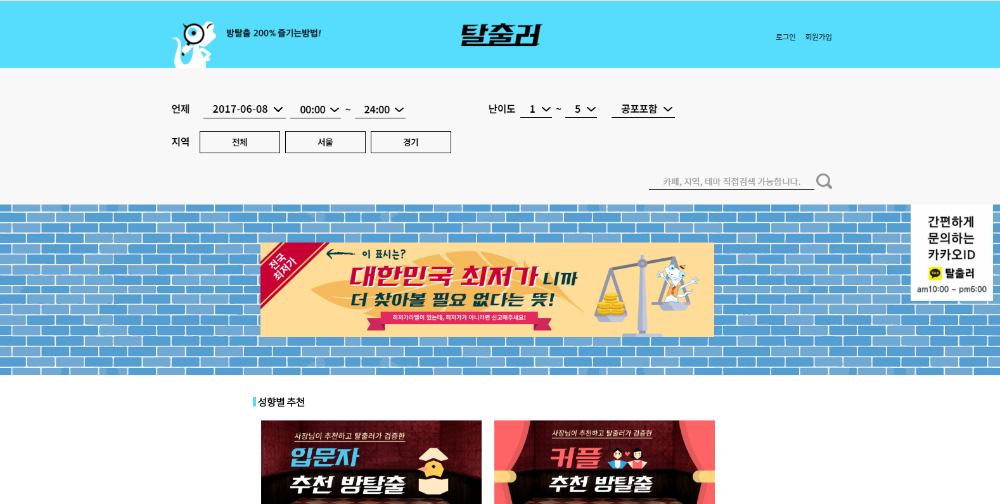
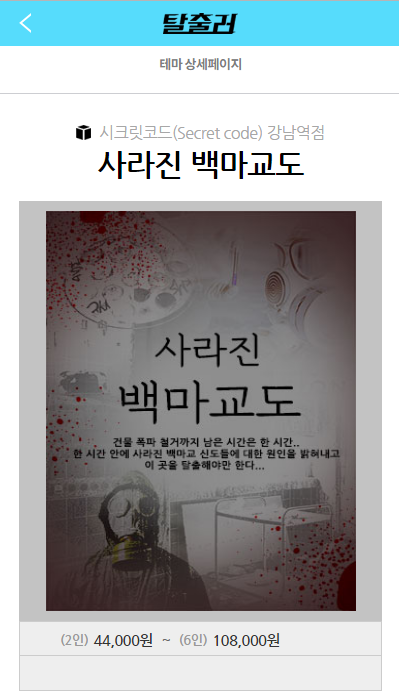
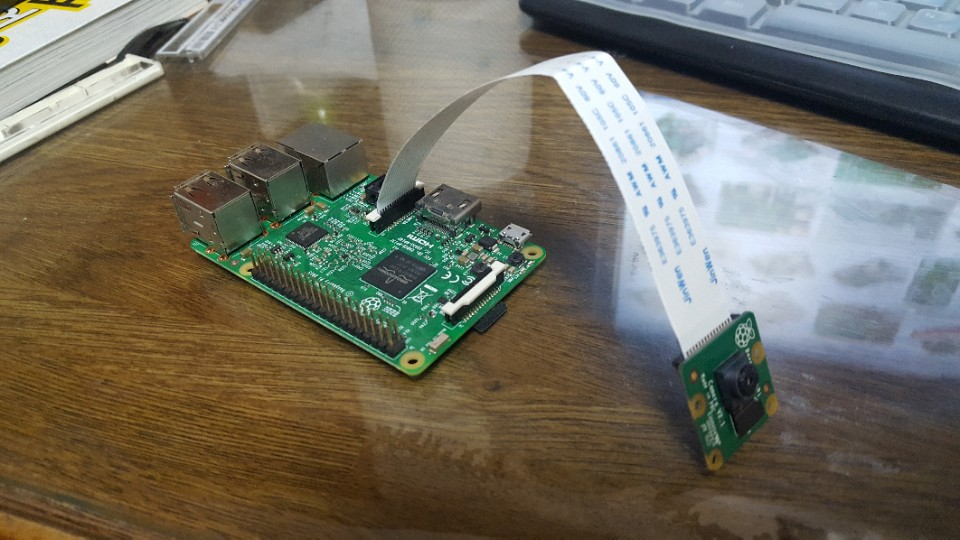
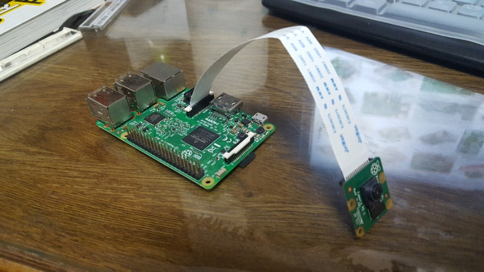
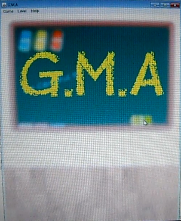
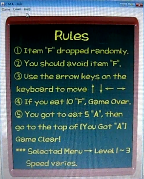
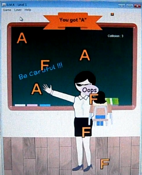
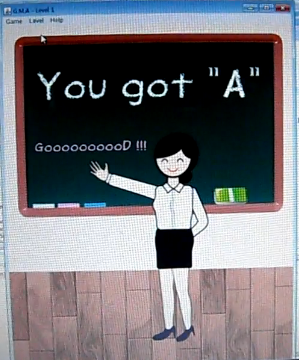
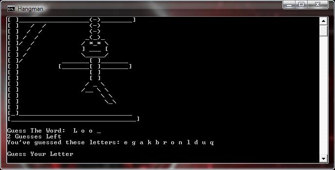

Smart Mirror
현재 제작중입니다.
라즈베리 파이를 활용하여 IOT Smart Mirror를 제작하고 있습니다. 현재 CentOS 6.4를 사용하고 있으며 서버를 구축하고 있습니다.
O2O Flatform
반응형 웹을 기반으로한 O2O 플랫폼을 개발한 경험이 있습니다. 표준 웹 제작 언어와 PHP, MySql을 사용하였습니다. 현재, 스타트업 회사 이놀루션의 개발책임자(CTO)로 있으며 유저용 웹사이트, 업소용 웹사이트, 관리자용 웹사이트를 제작했습니다. 현재 사업 초기단계에 있습니다.
VR Camera
라즈베리파이3를 활용한 VR camera를 제작한 경험이 있습니다. 라즈베리파이에 Apache를 설치하여 서버를 구동하였고, javascript언어를 사용하여 VR Camera 모듈을 커스터마이징 하여 사용했습니다. 또한, 테더링 IP를 감지하여 이동시에도 VR camera를 활용 할 수 있도록 구현했습니다. 동영상 녹화 앱과 결합하여, 장기간 침대에 누워있어야 하는 환자들을 대상으로 재활 의지를 상승시키는 방향으로 프로젝트를 진행했습니다.
 

Community App
대학생들의 커뮤니티와 편의 정보를 제공하는 하이브리드 앱을 개발한 경험이 있습니다. 기획자, IOS개발자, Web/Android개발자, UX/UI 디자이너, 마케터로 총 5인 팀으로 구성되어 있으며, Web/Android 개발을 담당했습니다. 50인 오프라인 설문 결과, 1250명의 대학 신입생중 91%가 앱을 알고 있었으며 85%가 앱을 다운받은 경험이 있다고 답했습니다. 3개월간 총 1900번의 다운로드를 기록했으며 목표한 1000명보다 두배가 넘는 수치였습니다. 또한, 학교 광고와 음식점 광고를 통하여 3개월간 약 6,000,000원의 순수익을 창출한 경험이 있습니다.
Java Game
Java AWT의 FRAM과 EVENT, IMAGE 패키지를 사용한 JAVA 게임을 제작한 경험이 있습니다. 관심에 의해 스스로 시작한 JAVA공부를 구현시켜보고자 프로젝트를 기획하게 되었으며, Runnable, KeyListener, ActionListener 인터페이스를 사용한 Frame 클래스를 GMA클래스가 상속받는 구성으로 설정했습니다. 상단 메뉴들을 만들고 액션들을 추가한 뒤 동작 조건들을 구현했습니다. 학생이 떨어지는 F학점을 피해 A학점을 획득하여 최종목적지에 골인하는 게임입니다. 메뉴는 Home, Start, Exit / Level 1~3(속도조절) / Rules 로 구성했습니다.
CPP Game
CPP의 파일 입 출력 함수를 통해 Hangman 게임을 제작한 경험이 있습니다. fstream헤더를 사용하여, 텍스트 파일에서 단어를 읽어와 사용자가 그 단어를 추측하는 것을 핵심 기능으로 삼았습니다. 일반적인 단어를 추측하는 행맨 게임에, 사용자의 흥미유발을 위해 레벨과 경험치의 기능을 추가 했습니다. 총 15단계까지 단어 레벨이 설정되어있으며, 단어를 맞출 때 마다 경험치(Exp)를 획득해 레벨업을 하는 체계입니다.
